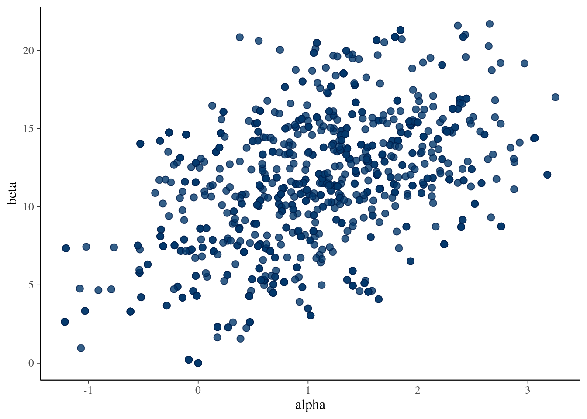

Loading required package: markmyassignmentAssignment set:
assignment5: Bayesian Data Analysis: Assignment 5
The assignment contain the following task:
- density_ratioThis assignment is related to Lecture 5 and Chapters 10 and 11.
If you are not using JupyterHub (which has all the needed packages pre-installed), and want to make the assignment on your own computer, you may use a docker container that includes all the necessary software packages, too.
Reading instructions:
The following will set-up markmyassignment to check your functions at the end of the notebook:
Loading required package: markmyassignmentAssignment set:
assignment5: Bayesian Data Analysis: Assignment 5
The assignment contain the following task:
- density_ratioThe following installs and loads the aaltobda package:
Loading required package: aaltobdaThe following installs and loads the latex2exp package, which allows us to use LaTeX in plots:
Loading required package: latex2expThe following installs and loads the posterior package which imports the rhat_basic() function:
Loading required package: posteriorThis is posterior version 1.6.1
Attaching package: 'posterior'The following object is masked from 'package:aaltobda':
mcse_quantileThe following objects are masked from 'package:stats':
mad, sd, varThe following objects are masked from 'package:base':
%in%, matchThe following installs and loads the ggplot2 package and the bayesplot package
Loading required package: ggplot2Loading required package: bayesplotThis is bayesplot version 1.14.0- Online documentation and vignettes at mc-stan.org/bayesplot- bayesplot theme set to bayesplot::theme_default() * Does _not_ affect other ggplot2 plots * See ?bayesplot_theme_set for details on theme setting
Attaching package: 'bayesplot'The following object is masked from 'package:posterior':
rhatMetropolis algorithm: Replicate the computations for the bioassay example of BDA3 Section 3.7 using the Metropolis algorithm. The Metropolis algorithm is described in BDA3 Chapter 11.2. More information on the bioassay data can be found in Section 3.7 in BDA3, and in Chapter 3 notes.
Below you are given a code that implements Metropolis algorithm. It contains two functions - density ratio that computes ratio of joint distributions using log densities and metropolis_bioassay that performs sampling. Reasons behind using log densities are explained on BDA3 page 261 and Lecture video 4.1. Remember that \(p_1/p_0=\exp(\log(p_1)-\log(p_0))\). We use the Gaussian prior as in Assignment 4, that is \[ \begin{aligned} \begin{bmatrix} \alpha \\ \beta \end{bmatrix} \sim \text{N} \left( \mu_0, \Sigma_0 \right), \qquad \text{where} \quad \mu_0 = \begin{bmatrix} 0 \\ 10 \end{bmatrix} \quad \text{and} \quad \Sigma_0 = \begin{bmatrix} 2^2 & 12 \\ 12 & 10^2 \end{bmatrix}. \end{aligned}\]
However, this code contains 3 errors. The lines with errors are marked as:
Your task is to find these errors, correct them and answer corresponding questions in MyCourses. Note that bioassaylp() from aaltobda package evaluates the log-likelihood for given \(\alpha\) and \(\beta\). As for proposal distribution we used simple normal distributions \(\alpha^* \sim N(\alpha_{t-1}, \sigma = \alpha_\sigma)\) and \(\beta^* \sim N(\beta_{t-1}, \sigma = \beta_\sigma)\). Efficient proposals are discussed in BDA3 p. 295–297 (not part of the course). In real-life a pre-run could be made with an automatic adaptive control to adapt the proposal distribution.
data("bioassay")
density_ratio <- function(alpha_propose, alpha_previous, beta_propose, beta_previous, x, y, n){
prior_mean = c(0, 10)
prior_sigma = cbind(c(4, 12), c(12, 100))
### error 1
bioassaylp(alpha_propose, beta_propose, x, y, n)
- bioassaylp(alpha_previous, beta_previous, x, y, n)
+ dmvnorm(c(alpha_propose, beta_propose), prior_mean, prior_sigma, TRUE)
- dmvnorm(c(alpha_previous, beta_previous), prior_mean, prior_sigma, TRUE)
### error 1
}
metropolis_bioassay <- function(alpha_initial, beta_initial, alpha_sigma, beta_sigma, no_draws, warmup_len, x, y, n, chain_number){
data.frame(
alpha=c(alpha_initial, alpha_initial+alpha_sigma, alpha_initial-alpha_sigma),
beta=c(beta_initial, beta_initial+beta_sigma, beta_initial-beta_sigma)
)
alpha_previous = alpha_initial
beta_previous = beta_initial
alpha_rv = c()
beta_rv = c()
for(draw in 1:no_draws){
alpha_propose = rnorm(1, alpha_previous, alpha_sigma)
beta_propose = rnorm(1, beta_previous, beta_sigma)
### error 2
if(runif(1) > density_ratio(alpha_propose, alpha_previous, beta_propose, beta_previous, x, y, n))
### error 2
{
alpha_previous = alpha_propose
beta_previous = beta_propose
}
### error 3
alpha_rv = c(alpha_rv, alpha_propose)
beta_rv = c(beta_rv, beta_propose)
### error 3
}
data.frame(alpha=tail(alpha_rv,warmup_len), beta=tail(beta_rv, warmup_len), Chain=rep(chain_number, each=no_draws - warmup_len))
}set.seed(4911)
df_chain1 = metropolis_bioassay(0, 0, 1, 1, 3000, 1000, bioassay$x, bioassay$y, bioassay$n, 1)
df_chain2 = metropolis_bioassay(1, 1, 1, 1, 3000, 1000, bioassay$x, bioassay$y, bioassay$n, 2)
df_chain3 = metropolis_bioassay(1, 5, 1, 1, 3000, 1000, bioassay$x, bioassay$y, bioassay$n, 3)
df_chain4 = metropolis_bioassay(5, 3, 1, 1, 3000, 1000, bioassay$x, bioassay$y, bioassay$n, 4)
df_combined_samples <- rbind(df_chain1, df_chain2, df_chain3, df_chain4)Visualize trace plots with the code below. Have a look at bayesplot trace plot examples and tune your plot if wanted.
Scale for colour is already present.
Adding another scale for colour, which will replace the existing scale.
After looking at trace plots, compute Rhat values for both alpha and beta, along with the ess_mean as well as ess_quantile for the 25th quantile. If you’re unsure about the below, this demo provides more details on how to use the posterior and bayesplot package.
# To compute this, first convert to a draws_df object
names(df_combined_samples)[names(df_combined_samples) == 'Chain'] <- '.chain'
draws <- as_draws_df(df_combined_samples)
# You can get what you need from this summary
summarise_draws(draws, Rhat=rhat_basic, ESS= ess_mean, ~ess_quantile(.x, probs = 0.25))# A tibble: 2 × 4
variable Rhat ESS ess_q25
<chr> <dbl> <dbl> <dbl>
1 alpha 2.29 4.99 18.9
2 beta 2.28 5.01 9.69Plot the draws for \(\alpha\) and \(\beta\) (scatter plot). You can compare the results to BDA3 Figure 3.3b to verify that your code gives sensible results. Notice though that the results in Figure 3.3b are generated from the posterior with a uniform prior, so even when if your algorithm works perfectly, the results will look slightly different (although fairly similar).